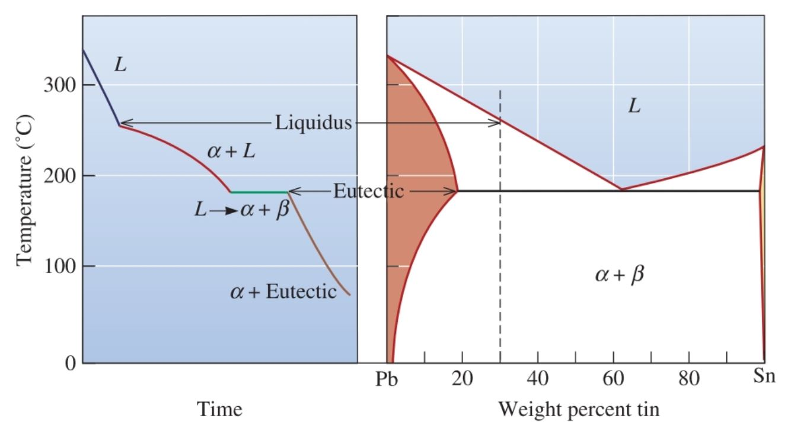
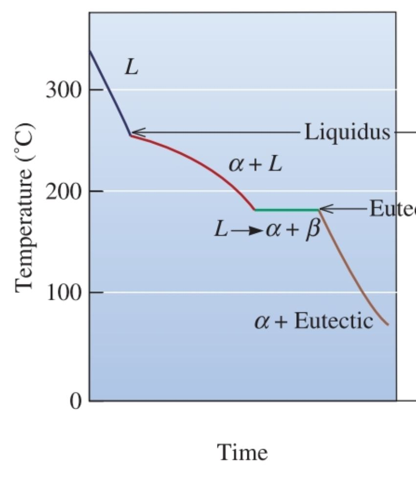

Cooling Curves
Using temperature–time curves to understand phase transformations in Pb-Sn alloys
Credit: Cooling curve illustrations and supporting material derived from Megan Dawkins (Spring 2018).
How to Use This Page
Cooling curves show what happens to temperature over time as an alloy cools and solidifies. Use them together with the phase diagram to identify when a liquid begins to form solid, when a eutectic reaction occurs, and why some curves show a thermal arrest or plateau.
Key Cooling Curves

Eutectic Cooling Curve
At the eutectic composition, the temperature drops until it reaches the eutectic temperature, then remains temporarily constant while the liquid transforms into α + β. This flat region indicates latent heat release during the eutectic reaction.
Source adapted from Megan Dawkins (Spring 2018).

Hypoeutectic Cooling Curve (30 wt% Sn)
For a hypoeutectic alloy, solidification begins above the eutectic temperature as primary α forms first. The remaining liquid continues cooling until the eutectic temperature is reached, where the rest of the liquid transforms into α + β.
Source adapted from Megan Dawkins (Spring 2018).

Cooling Curve Linked to the Phase Diagram
This visual connects the path followed during cooling to the corresponding location on the Pb-Sn phase diagram. It helps show when the alloy crosses the liquidus and when the eutectic reaction begins.
Source adapted from Megan Dawkins (Spring 2018).
What to Look For
Above the liquidus: the alloy is fully liquid, so temperature changes smoothly with time.
Crossing the liquidus: the first solid begins to form. For hypoeutectic alloys, this is usually primary α.
At the eutectic temperature: any remaining liquid transforms into α + β.
Plateau or thermal arrest: this happens because energy is released during phase transformation, temporarily slowing the temperature drop.
Final structure: the cooling curve helps explain why some alloys end with primary α plus eutectic, while the eutectic composition forms only eutectic α + β.
Connection to Other Chapter 10 Tools
Use the Pb-Sn Phase Diagram Tool to identify phases at a given composition and temperature, then use the Microstructure Evolution page to see what those phases look like physically. This page bridges those two by showing the alloy's path through cooling over time.